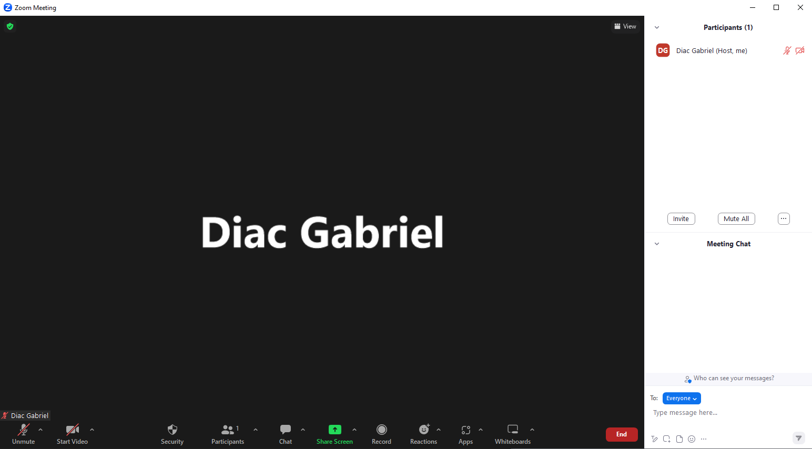
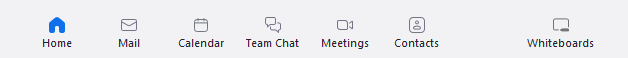
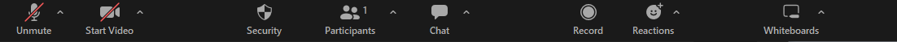
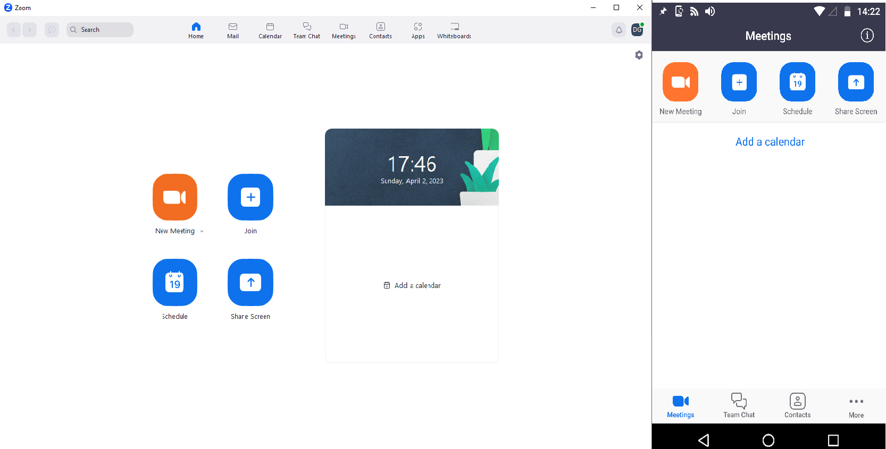
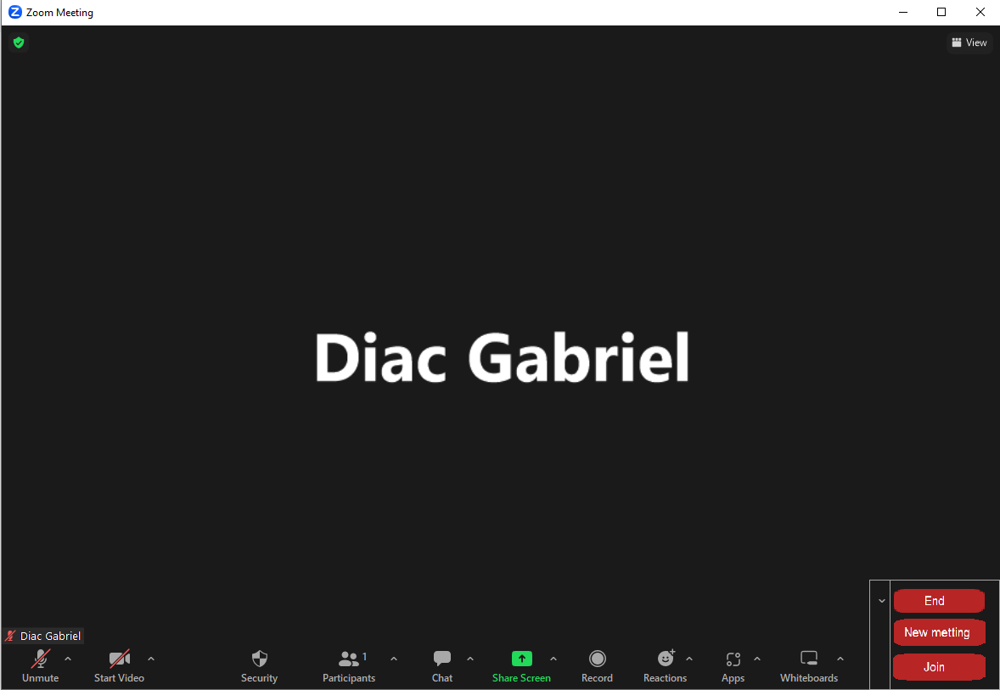
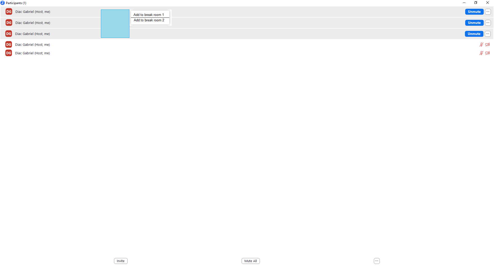
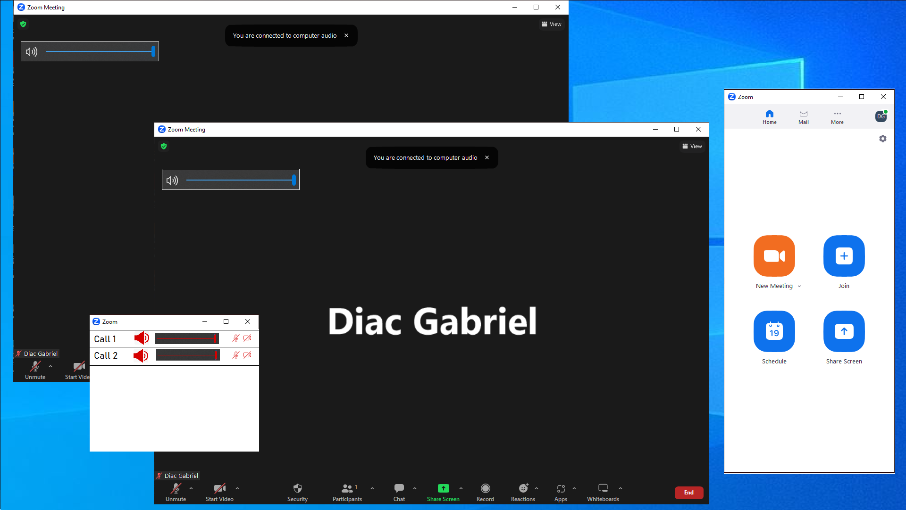

Zoom is an online video-conferencing application. It allows users to connect or organize virtual meetings in real-time with one or more people, regardless of physical location. The Zoom platform is available on multiple devices, including desktops, laptops, phones, and tablets, and can be used for business, education, or to stay in touch with family and friends.
Affordances are interface features that suggest to users the actions they can perform. These are visual and design elements that indicate to the user what can be done with an element or interface.
The case we have chosen is an academic presentation, for which we will have an interaction flow as follows:
Creating a new meeting or joining an existing one.
Affordances:
Inviting participants.
Affordances:
The actual presentation.
Affordances:
Ending the meeting.
Affordances:
All buttons have suggestive names or images and are placed in locations where they are easy to spot on the screen. Additionally, by simply hovering over them, they change color, indicating to the user that they are elements they should interact with. All of these help the user to easily interact with the Zoom application."
The buttons in the start menu are centered and have the same size. The "Join" button stands out through its placement and different background compared to the other buttons, thus attracting the user's attention and providing a quick way to join a conference
In the Zoom application's authentication menu, the size of the form fields and the "Sign in" button are identical. When a user fills in a field, the corresponding box is highlighted with a blue outline. During this time, the "Sign in" button remains inactive, with a white background similar to that of the page, until all required information is correctly entered.
In addition, the "Keep me signed in" option is represented by a checkbox, and when selected, the corresponding symbol appears in the box to indicate that the option is active.
The main menu page of the Zoom application is divided into three parts. In the center of the page, on the right side, there is a calendar useful for scheduling meetings. On the left side of the page, there are four identically sized buttons (colored to stand out from the background). The "New Meeting" button has a different background color to help the user quickly create a new meeting, as it is one of the most important functions.
Above the buttons, at the top of the page, there is a navigation menu consisting of icons with the same style, and the section of the menu where the user is located is highlighted by the blue color of the corresponding icon
During the conference, the majority of the screen is dedicated to the main area where the most important information is displayed, such as screen sharing, webcam display, or a participant's name. Even when we start the chat or display the participant list, the main "screen" remains the center of attention
At the bottom of the screen, we have a small-sized menu that disappears automatically when we do not interact with it and appears with a simple cursor movement. The menu icons have a similar design, all being colored in white, except for the "End" and "Share Screen" buttons. The "End" button is colored in red to signify the importance of stopping the conference, while the "Share Screen" button is colored in green to help users identify it more easily.
In Zoom, we can observe that the number of idioms is relatively low, as the application mainly relies on visual metaphors to communicate its functionalities to users.
If we analyze the main page, we can observe that almost every function in the menu is represented by a suggestive visual metaphor, making it easy to understand the functionality of each button.
The same thing happens in the conference page menu:
For a CLI - Command Line Interface, they should be replaced with words that convey the same functionality, so all visual metaphors/idioms will be represented by the words that are below each of them in the pictures from above. More precisely:
To connect, we will use the "login" command followed by entering the username and password. Then, we can access a list of all available commands using the "info" command. To navigate forward and backward, we will use the "back" and "forward" commands. To create a new meeting, we can use the "new meeting" command, while the "join" command will allow us to join an existing meeting. Once we are in the meeting, we will be able to access the classic functions through similar commands, such as "mute/unmute", "camera on/camera off", "share screen on/share screen off", "list participants", "mute x", "raise hand", etc.
The situation can arise when the participants microphones have a large volume difference, and the user is forced to constantly adjust the volume, which makes it harder to follow the discussions.
If the number of participants talking over each other is high, nobody can finish their ideas, being constantly interrupted, which can make it difficult for a participant to follow the discussion or presentation.
Keeping track of multiple features in the Zoom application, such as starting multiple video cameras, communicating sometimes through the microphone and sometimes through the chat, and monitoring screen sharing at the same time, can overload a participant, especially if the pace of the conversation is too fast.
Technical issues such as weak internet connection, poor video or audio quality, or a screen share with an unclear image can make it difficult for a participant to participate/understand a presentation.
The "raise hand" button is positioned in the sub-menu of the "reactions" button, which makes it quite difficult to find and use, even though it is a button used quite frequently compared to the reaction buttons, which are almost never used. Therefore, it would be beneficial to have a separate button in the main menu, both in the desktop and mobile versions. This change would make it easier to access this important functionality and improve the user experience.
Another UI/UX improvement would be to add a button that allows hiding the menu. This would reduce the amount of screen space taken up by the menu, allowing for example screen sharing without the menu getting in the way when the user moves the cursor or accidentally touches the screen. This functionality is especially necessary on mobile devices, where screen space is limited. Additionally, this button would be easy to use and would allow users to easily bring back the menu with a simple click when needed.
Another modification would be to add two modes: Light mode and Dark mode. This functionality is used by many other popular applications and would allow users to choose their preferred display mode by changing the colors of the menu and background according to their preferences.
Fitts Law states that the time required to reach an element depends on the distance from the starting point to the element and the size of the element. The main difference between mobile and desktop applications is the variation in screen size, with phone screens being considerably smaller than desktop screens, resulting in buttons having a higher size-to-screen ratio on mobile and also being closer to each other. This is because we don't want to lose accessibility and force the user to press small buttons that could lead to mistakes.
Hick's Law states that decision time varies depending on the number of options we have. The difference between the mobile and desktop versions in terms of this law is that in the mobile app menu, we have a reduced number of buttons, with the possibility of accessing the rest using the "..." button, caused by the difference in screen size between mobile and desktop. Consequently, at least theoretically, having fewer options, the user should be able to navigate through the menu faster, at least in terms of main tasks.
Looking at the Steering Law, we observe that when users have to navigate through menus or other interface elements to access secondary functions, the access time for these functions can increase. In the mobile app, this time is longer because we have to navigate through a secondary menu after pressing the "..." button, as we are limited by the screen size. However, this compromise is necessary to optimize the other laws.
A new feature would be to add two additional buttons "New Meeting" and "Join Meeting" next to the "Leave/End meeting" button, buttons that would allow us to create or join other conferences without the need to always go back to the main menu. This would make navigating between meetings much faster.
Another feature could be the ability to easily select participants for creating breakout rooms. We could navigate through the list of participants similar to navigating through files in a folder, using buttons/commands such as Ctrl to manually select, drag to select multiple participants, or Ctrl+A to quickly select all participants and group them into different "rooms".
A new feature would be the ability to participate in multiple conferences at the same time. The main menu will not close when we join or start a conference. The conference windows will remain the same, except for a new volume button to adjust the sound of each window separately. Additionally, a separate window could display a list of conferences we are connected to, to help us navigate more easily between them.
